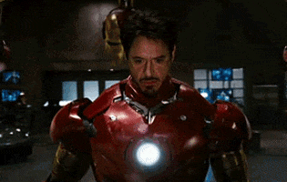

Iron Man (titulada Iron Man: el hombre de hierro en Hispanoamérica) es una película de superhéroes. Es la primera entrega del Universo cinematográfico de Marvel. La cinta fue dirigida por Jon Favreau, con un guion de Stan Lee, Hawk Ostby, Art Marcum y Matt Holloway. Es protagonizada por Robert Downey Jr, Terrence Howard, Jeff Bridges, Shaun Toub y Gwyneth Paltrow. La trama gira en torno a Tony Stark, un empresario e ingeniero, que construye un exoesqueleto motorizado y se convierte en Iron Man, un superhéroe tecnológicamente avanzado.

El proyecto de la película había comenzado desde 1990 en manos de Universal Pictures, Paramount Pictures, y New Line Cinema sucesivamente en varios momentos, antes que Marvel Studios readquiriera los derechos en 2005. Marvel puso al proyecto en producción como su primera película autofinanciada, con Paramount Pictures como su distribuidora. Favreau firmó como director, apostando por una idea naturalista, y eligió rodar el filme principalmente en California, rechazando el escenario de la Costa Este de los cómics para diferenciarla de varias películas de superhéroes que transcurren en entornos al estilo de Nueva York. Durante el rodaje, los actores tenían la libertad de crear sus propios diálogos, ya que la preproducción se centraba en la historia y acción. La creación del personaje principal resultó de una mezcla entre las versiones de goma y metal de las armaduras, creadas por la empresa de Stan Winston, e imágenes generadas por computadora.
Iron Man tuvo su premier en Sídney el 14 de abril de 2008, y se estrenó en cines el 2 de mayo. Recibió reseñas generalmente positivas de parte de la crítica y de la audiencia, con elogios en particular a la actuación de Downey como Tony Stark y recaudó más de $585 millones contra un presupuesto de $140 millones.